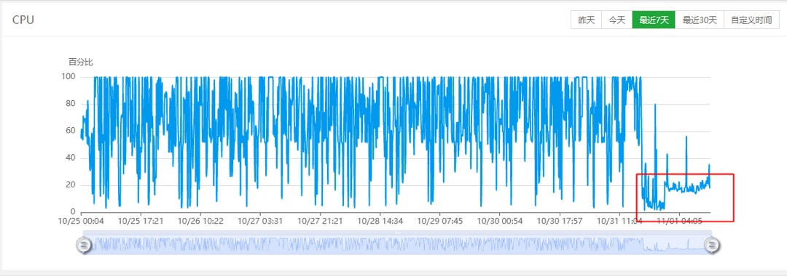
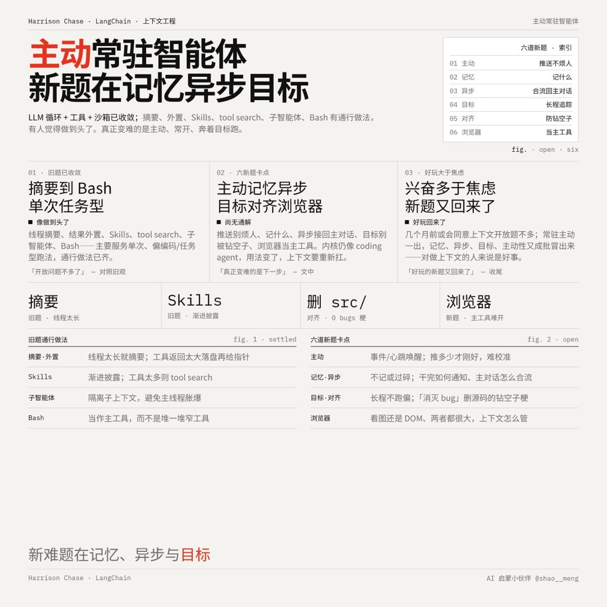
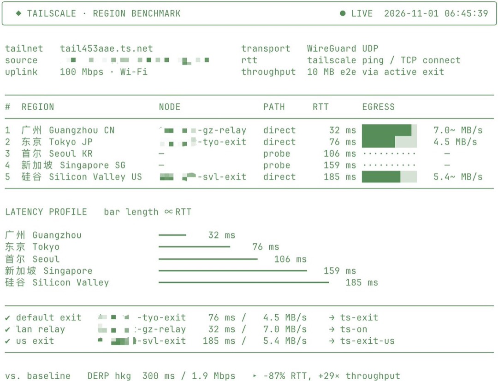

本期速览
01 ElevenLabs用文本描述即生成语音
02 搬瓦工被曝暗藏定时进程消耗CPU
03 常驻智能体带来六道上下文新题
04 PeerRelay替代DERP延迟降5倍
05 CodeX两月生成200万行海运AI系统
01｜ElevenLabs用文本描述即生成语音
来源（X） · @ElevenLabsDevs · 2026-07-18 07:34
中文译文
在提示词中描述一个声音，然后通过 API 生成它。不需要录音，不需要配音演员。将其保存到你的声音库中，然后在你的应用中调用它。
原文
Describe a voice in a prompt and generate it via API. No recordings, no voice actors. Save it to your library and call it from your app.
02｜搬瓦工被曝暗藏定时进程消耗CPU
来源（X） · @williamlong · 2026-11-01 12:55

03｜常驻智能体带来六道上下文新题
来源（X） · @shao__meng · 2026-11-01 10:00
来自 LangChain 创始人 @hwchase17 的分享，他认为「LLM 循环 + 工具 + 沙箱」已基本收敛，摘要、结果外置、Skills、工具检索、子智能体、Bash 等也有了通行做法，所以有人觉得智能体工程做到头了；但真正变难的是下一步，主动、常开、奔着目标跑的智能体：推送别烦人、记什么、异步怎么接回主对话、目标别被钻空子、浏览器当主工具时上下文怎么扛。这些还没有通用解法，也正是他现在觉得好玩的地方。
# 旧题为何显得「已解决」
业界对 Claude Code、Deep Agents 一类 harness 的形态越来越像：模型在环里调工具、在沙箱里干活。为撑住上下文，大家陆续对齐了几套标准操作：线程太长就摘要；工具返回太大就落盘再给指针；用 Skills 做渐进披露；工具太多就做 tool search；用子智能体隔离子上下文；把 Bash 当成主工具而不是堆一堆窄工具。这些主要服务单次、偏编码/任务型的跑法，所以容易给人「难题做完了」的感觉。
# 新题从哪冒出来
近几个月他和智能体建设者聊得最多的，是主动、常驻、目标导向的智能体：内核仍像 coding agent，但用法变了，上下文工程要重新扛。文中对照清单（左栏勾选、右栏空框）把两边写得很清楚。
# 六道新题，各自卡在哪
1. 主动又不烦人：监听事件流或心跳唤醒，必须能推给用户才像「在帮忙」，推多了又刷屏。多少算刚刚好，仍是难校准的产品与上下文问题。
2. 记什么：记忆常是简单数据结构（文件、一段字符串）加一层「决定记什么」的智能；两端都容易翻车——什么都不记，或记得过碎。这层判断本身往往又是个小智能体，规则还没有通用答案。
3. 异步：任务和工具、子智能体都越跑越久，但主对话还要随时接用户新消息，于是更多活丢到异步工具/子智能体。新问题变成：活干完怎么通知主智能体；主智能体还在跑、已经结束、或卡在等人审批时，上下文怎么合流。文中配了一张时间线示意（用户等的同时，后台工作流如何汇入）。
4. 目标追踪：从「做完一件事」变成「奔着大目标迭代」（文中举例 Hone 一类）。要会拆步、做实验、收反馈、长期不跑偏；难在愿意试新招而不是原地重复，难在想着大目标而不是只盯小任务，难在跨很长周期仍一致。
5. 对齐（别钻目标空子）：目标很难写到智能体钻不了空子；一味优化指标会走到预想不到的捷径，经典梗是「消灭代码库里所有 bug」→ 删光源码（没有代码就没有 bug）。需要 harness 既盯着目标，又不让目标被过度优化。文中配了删 src/ 后宣称「0 bugs，目标完成」的梗图。
6. 浏览器当主工具：编码智能体靠 Bash；更通用的主动智能体越来越靠浏览器。浏览器比终端难开：看图还是看 DOM、两者都很大、上下文怎么管，都还在摸。
结尾
几个月前他或许会同意「上下文工程开放问题不多了」；常驻主动智能体一出现，记忆、异步、目标、主动性又成批冒出来。语气是兴奋多于焦虑：对做上下文的人来说，好玩的新题又回来了。

引用内容
Harrison Chase @hwchase17
中文译文
很多内容工程的挑战都有相当标准的解决方案，这导致一些工程师说智能体工程已经被解决了/很无聊了。
这在一定程度上是真的，但随着智能体的不断演进，有一堆（有趣的）新挑战正在涌现！https://x.com/i/article/2116547440857718784
原文
A lot of content engineering challenges have pretty standard solutions, which has lead to some engineers saying agent engineering is solved/boring
True to some extent, but there are a bunch of (fun) new ones emerging as agents evolve! https://x.com/i/article/2116547440857718784
04｜PeerRelay替代DERP延迟降5倍
来源（X） · @losingle · 2026-11-01 06:52
根因是家宽在运营商CGNAT后面、酒店 Wi-Fi 也没有 IPv6，IPv4 打洞打不通，流量就自动回落到了 Tailscale 官方的香港 DERP 中继
后来发现 Tailscale 支持 Peer Relay
不用自建 DERP（那玩意儿还是 alpha，还要域名、证书、备案），只要在国内云上开一台带公网 IP 的小机器做中继，Mac ↔ NAS 就从 300ms 降到 50–100ms

05｜CodeX两月生成200万行海运AI系统
来源（X） · @0xlangeai · 2026-11-01 14:26
用 𝗖𝗼𝗱𝗲𝘅 做海运公司 AI 业务系统，把 𝟯𝟬+ 零散功能节点整成一套。跑着跑着会调废弃接口、漏权限、顺手改旁边模块——根子多半是上下文污染和注意力稀释：旧要求还在、过程日志堆着、一次塞太多目标。
作者给的几条可执行做法：
𝟭. 亲手维护 𝗔𝗚𝗘𝗡𝗧𝗦.𝗺𝗱：入口、边界、验证命令写清楚；别每踩一坑就让 AI 再加一条，也别堆成踩坑大全。
𝟮. 子代理拆活：探索、日志、慢接口各自查，主对话只收结论和证据；改同一文件用分支 / 𝘄𝗼𝗿𝗸𝘁𝗿𝗲𝗲 分开。
𝟯. 桌面端用项目、置顶和命名管并行：一天几十个会话时，看下一步是决策、验收还是继续跑。
𝟰. 验证写进流程：改完自己跑检查再说结果；人盯业务含义、权限和整条流程验收。
引用内容
聂二AI落地内参 @nieerai_dev
中文译文
原文